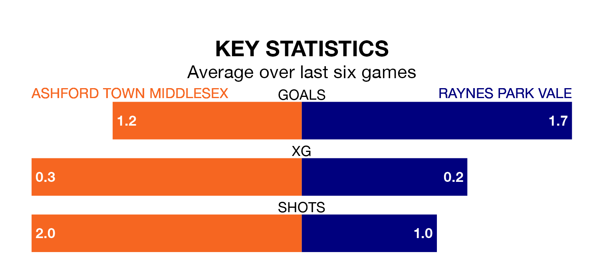

Ashford Town Middlesex are on a terrible run ahead of hosting Raynes Park Vale at the Robert Parker Stadium on Saturday, with just two points collected from their last six games.
The Tangerines have picked up two draws and four losses in their last six Isthmian League Division One – South Central games, and face a Vale side whose last six games have brought three wins and one draw.
Ashford Town Middlesex are 19th in the table after 25 games, of which they have won five and drawn six, earning 21 points.
Vale are 14 places ahead of the Tangerines in fifth, with 16 wins and five draws putting them on 53 points.
With 29 goals in 25 games so far this season, the home side are the league's third-lowest scorers with 1.2 goals per game. And they are conceding more than average, letting in 44 goals at a rate of 1.8 per game.
The visitors, meanwhile, are above average scorers, with 1.8 goals per game, compared to a league average of 1.7. They have conceded 1.3 goals per game.
Ashford Town Middlesex's last match was on February 10, a 3-0 loss against Marlow.
Vale beat Chipstead 2-1 last time out, on Tuesday.
Updated: 12:06 (UTC), 15/02/24